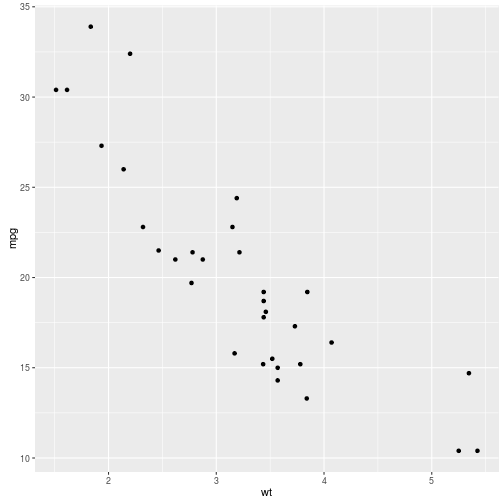

Characterization of agricultural drought in Chile
Context of drought in Chile
- The last years Chile has been affected for different level of drought.
- In early 2015 in Chile unusual drought conditions occurred, the central-south part of Chile was affected for drought a situation almost unprecedented.
- On March 2015 in Chile were 194 administrative units (county) declarated under drought conditions (56% of whole country)
- According with the fifth report of the IPCC
- there is an increase in global temperatures.
- a decrease of precipitation is expected in central-south Chile.
- a increase of droughts frequency
- Main problems in Chile:
- low density of weather stations
- there is a lack of knowledge of the impact of rainfall deficits in agriculture
Hypothesis
It is possible to develop a merging remote sensing products of precipitation and evapotranspiration locally using in-situ data and so improve the spatial and temporal characterization of agricultural drought in Chile
Objectives
- Develop a merging remote sensing product of precipitation and evapotranspiration with monthly frequency from 2000 to 2015 for the watersheds of rivers Limari, Itata y Bueno.
- Derive drought indices based on vegetation, land surface temperature, precipitation and evapotranspiration and assess the combined effect.
- Perform the characterization of agricultural drought
Study area
Limarí river basin
Itata river basin
Bueno river basin
Methodology
Remote sensing data
- MODIS (Vegetation)
- MCD12Q1 (IGBP) : Landcover Type, 1km, yearly, 2001 - 2013.
- MOD13A3 : NDVI, 1km, monthly, 2000 - 2015.
- MOD11A2 : LST, 1km, 8 days, 2000 - 2015
- MOD16 : \(ET_0\), 1km, monthly, 2000 - 2015
- Precipitation
- TRMM 3B43 v7: Precipitation, 0.25° , monthly, 1998 - 2015
- Persiann-CDR : Precipitation, 0.25° , daily, 1983 - 2015
- CHIRPS 2.0 : Precipitation, 0.05° , monthly, 1981 - 2015
Meteorological stations
- From the data base of Center for Science for Climate and Resilience (CR2) from the University of Chile (http://www.cr2.cl).
- Precipitation : 781 station with daily and monthly data
- Extreme temperatures : 281 stations
Merging
To improve the accuracy of the precipitation and evapotranspiration (ET) remote sensing products merging techniques will be used.
- Regression-Kriging (RK) : Spatial prediction of the in-situ measurements using the remote sensing product as predictor and additional information.
- Bayesian combination.
Derivation of drought indices
2000 - 2015
- Standardized vegetation index (SVI) : From NDVI (MOD13A3) the standardized anomaly was calculated as:
\[SVI = \frac{NDVI -\overline{NDVI}}{NDVI_\sigma}\]
- Vegetation condition index (VCI) : The time series of NDVI images was smoothed using a locally-weighted polynomial regression (LOWESS), then:
\[VCI = \frac{NDVI - NDVI_{min}}{NDVI_{max}-NDVI_{min}}\]
Derivation of drought indices
2000 - 2015
- Temperature condition index : The Land Surface Temperature (LST) images of 8 days was converted to monthly and then:
\[TCI = \frac{LST_{max} -LST}{LST_{max}-LST_{min}}\]
- Vegetation health index : Combines the response of vegetation and land surface temperature
\[VHI = 0.5\cdot VCI + 0.5 \cdot TCI\]
Derivation of drought indices
1983/1998 - 2015
- Precipitation Condition Index (PCI): this index was/will calculated for monthly accumulated precipitation of 1, 3 and 6 months using the remote sensing precipitation products.
\[PCI = \frac{PP_{rs}-PP_{rs}_{min}}{PP_{rs}_{max}-PP_{rs}_{min}}\]
- Scaled Drought Condition Index (SDCI) : this index was calculated using the three time scales of PCI (1, 3 and 6)
\[SDCI = 0.5\cdot PCI + 0.25 \cdot TCI + 0.25 \cdot VCI\]
Derivation of drought indices
1983/1998 - 2015
Standardized Precipitation Index (\(SPI_{rs}\)) : with the resulting precipitation from the mergin procedure it would be possible to derive an a spatial SPI.
Standardized Precipitation Evapotrasnpiration Index (\(SPEI_{rs}\)) : with the resulting precipitation and evapotranspiration from the mergin procedure it would be possible to derive an a spatial SPEI.
Data analysis
- Exploratory data analsis od the derived indices
- Different statistics to compare merging products.
- Point to point correlation between vegetation/temperture indices and precipitation.
- Maximum Covariance Analysis (MCA) between pair of indices vegetation/temperature, vegetation/precipitation and precipitation/temperature
Preliminary results
Persiann-CDR/TRMM 3B43 v7 vs in-situ
Correlation between indices in the Itata river basin
Comparison between indices in Chile on March 2015
PCI-1, PCI-3 and PCI-6
Comparison between indices in Chile on March 2015
SVI, TCI, VCI and VHI
The end
Thanks
RVL.IO
If you don't like writing slides in HTML you can use the online editor rvl.io.
Works in Mobile Safari
Try it out! You can swipe through the slides and pinch your way to the overview.
Marvolous Unordered List
- No order here
- Or here
- Or here
- Or here
Fantastic Ordered List
- One is smaller than...
- Two is smaller than...
- Three!
TRANSITION STYLES
You can select from different transitions, like:
Cube - Page - Concave - Zoom - Linear - Fade - None - Default
Themes
Reveal.js comes with a few themes built in:
Sky - Beige - Simple - Serif - Night - Default - Solarized - Moon
* Theme demos are loaded after the presentation which leads to flicker. In production you should load your theme in the <head> using a <link>.
Global State
Set data-state="something" on a slide and "something" will be added as a class to the document element when the slide is open. This lets you apply broader style changes, like switching the background.

Blackout

Soothe

Custom Soothe Styles
Orange
Yellow
Green
Blue
Indigo
Violet
Brown
Custom Events
Additionally custom events can be triggered on a per slide basis by binding to the data-state name.
Reveal.addEventListener( 'customevent', function() {
console.log( '"customevent" has fired' );
} );
Clever Quotes
These guys come in two forms, inline: The nice thing about standards is that there are so many to choose from and block:
For years there has been a theory that millions of monkeys typing at random on millions of typewriters would reproduce the entire works of Shakespeare. The Internet has proven this theory to be untrue.
Pretty Code
function linkify( selector ) {
if( supports3DTransforms ) {
var nodes = document.querySelectorAll( selector );
for( var i = 0, len = nodes.length; i < len; i++ ) {
var node = nodes[i];
if( !node.className ) ) {
node.className += ' roll';
}
};
}
}
Courtesy of highlight.js
Intergalactic Interconnections
You can link between slides internally, like this.
Fragmented Views
Hit the next arrow...
... to step through ...
- any type
- of view
- fragments
Take a Moment
Press b or period on your keyboard to enter the 'paused' mode. This mode is helpful when you want to take distracting slides off the screen during a presentation.
Incremental Paragraphs
This is paragraph 1 and should appear on first click.
This is paragraph 2 and should appear on second click.
Title
This is a slide
- point 1
- point 2
- point 3
Incremental Reveal
These points should be animated
- Point 1
- Point 2
- Point 3
Code with slide
library(ggplot2)
qplot(wt, mpg, data = mtcars)

Vertical Slides
The next set of slides will be vertical slides.
Slide 1
This is slide 1